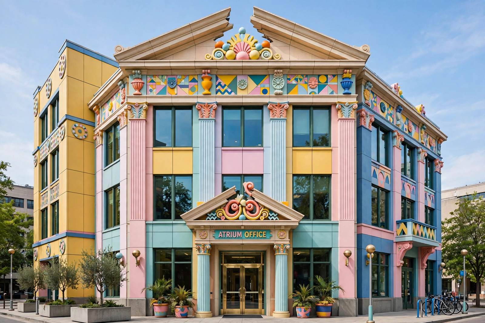

Postmodern architecture

Postmodern architecture is a style or movement that emerged in the 1960s as a reaction against the austerity, formalism and universalism of modernist architecture, particularly the International Style. It promotes pluralism, historical quotation, ornament, colour, wit and contextualism — often combining classical motifs with modern construction in ironic or exuberant ways, an attitude sometimes summarised as embracing "complexity and contradiction."
Origins
The movement's foundational texts include Robert Venturi's Complexity and Contradiction in Architecture (1966) — which countered Mies van der Rohe's "less is more" with "less is a bore" — and Venturi, Denise Scott Brown and Steven Izenour's Learning from Las Vegas (1972), which celebrated the commercial vernacular of the Strip. Charles Jencks popularised the term and famously declared that modern architecture "died in St. Louis, Missouri" with the demolition of the Pruitt–Igoe housing project beginning in 1972.
Characteristics
- Historical reference and quotation, often ironic or at exaggerated scale
- Ornament and applied colour after modernism's plain surfaces
- "Double coding" (Jencks): buildings readable by both professionals and the public
- Contextualism and respect for streetscape and local traditions
- Fragmentation, asymmetry and playfulness of form
Notable buildings and architects
Landmarks include Venturi's Vanna Venturi House (1964), Philip Johnson's AT&T Building in New York (1984) with its Chippendale-style broken pediment, Michael Graves's Portland Building (1982), James Stirling's Neue Staatsgalerie in Stuttgart (1984), and Charles Moore's Piazza d'Italia in New Orleans (1978). Other leading figures include Ricardo Bofill, Terry Farrell and Kengo Kuma's early work. The style shares intellectual roots with literary and philosophical postmodernism, and overlaps with deconstructivism in its later phase; studios such as Cinecittà hosted productions whose sets echoed its scenographic spirit.
Criticism and legacy
Critics have charged postmodern architecture with superficiality, pastiche and corporate kitsch, while defenders credit it with restoring meaning, humour and historical continuity to cities. From the 1990s its dominance waned as deconstructivism, high-tech and new urbanism rose, though many postmodern buildings have since been listed and preserved as significant heritage.